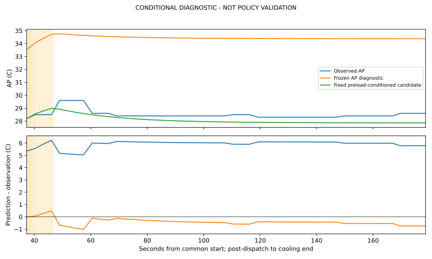
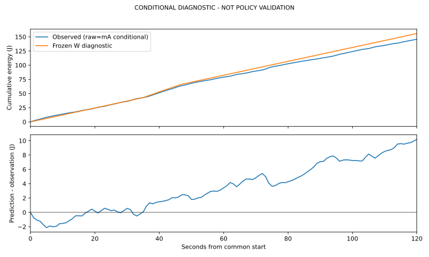
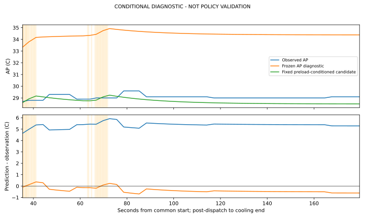
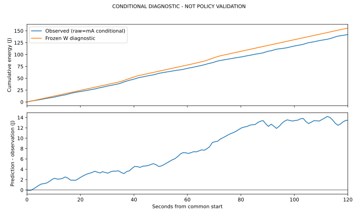

한국어 결과 보고서 · 점수 CSV · 고정 후기 방향 CSV · 작은 결과/소비
후보 평균 오차 감소와 후기 재상승 미재현은 별도 사실입니다. 시작 AP28.1/28.7°C는 기존 개발 범위 밖입니다. strict/정책 순위/정확도 PASS는 미판정이며 각 이력1세션입니다.
prospective bundled AP confirmation
기존 후보 고정 · 부하 전 AP＋실제 일정 조건부 계산. 계수 재적합·정책 PASS 없음. J는 raw=mA 조건부이며 절대 정확도 미인증.
원 실행: completed_descriptive_only · 판독 가능 2/2. 판독 완료와 원 실행 완료는 별도입니다.
evaluated_conditional_transfer
{
"initial_ap_c": 28.1,
"actual_parallel_seconds": 1.609444307000004,
"observed_energy_120s_j": 145.62134036929567,
"signed_energy_error_j": 10.20516953368309,
"ap_scores": {
"frozen": {
"mae_c": 5.911909962926211,
"max_absolute_error_c": 6.215910597437116,
"observed_idle_change_c": -1.0,
"predicted_idle_change_c": -0.3779717651876169,
"diagnostic_peak_signed_error_c": 5.158733193615831
},
"candidate": {
"mae_c": 0.449944530437889,
"max_absolute_error_c": 1.0153644603937764,
"observed_idle_change_c": -1.0,
"predicted_idle_change_c": -1.0646389700732612,
"diagnostic_peak_signed_error_c": -0.617138650905602
}
}
}

[
{
"start_s": 90,
"end_s": 115,
"status": "observed",
"observed_change_c": 0.10000000000000142,
"frozen_change_c": -0.03927390727096025,
"candidate_change_c": -0.1106234275646365
},
{
"start_s": 120,
"end_s": 145,
"status": "observed",
"observed_change_c": 0.0,
"frozen_change_c": -0.009909989182304457,
"candidate_change_c": -0.027913621196656635
},
{
"start_s": 150,
"end_s": 175,
"status": "observed",
"observed_change_c": 0.20000000000000284,
"frozen_change_c": -0.002495093129766701,
"candidate_change_c": -0.007027967759949405
}
]evaluated_conditional_transfer
{
"initial_ap_c": 28.7,
"actual_parallel_seconds": 0.8225790769999932,
"observed_energy_120s_j": 142.3512637517639,
"signed_energy_error_j": 13.483338020866569,
"ap_scores": {
"frozen": {
"mae_c": 5.350159207027863,
"max_absolute_error_c": 5.92027625989536,
"observed_idle_change_c": 0.10000000000000142,
"predicted_idle_change_c": -0.5365120284418623,
"diagnostic_peak_signed_error_c": 5.320276259895358
},
"candidate": {
"mae_c": 0.4049695956705824,
"max_absolute_error_c": 0.6913988774429534,
"observed_idle_change_c": 0.10000000000000142,
"predicted_idle_change_c": -0.744974962234398,
"diagnostic_peak_signed_error_c": -0.36065890924631105
}
}
}

[
{
"start_s": 90,
"end_s": 115,
"status": "observed",
"observed_change_c": -0.027886741217947986,
"frozen_change_c": -0.16628485455146347,
"candidate_change_c": -0.23089520210645986
},
{
"start_s": 120,
"end_s": 145,
"status": "observed",
"observed_change_c": 0.0,
"frozen_change_c": -0.04178324309019388,
"candidate_change_c": -0.058018214491013964
},
{
"start_s": 150,
"end_s": 175,
"status": "observed",
"observed_change_c": 0.10000000000000142,
"frozen_change_c": -0.01056400367554744,
"candidate_change_c": -0.014668670639295556
}
]